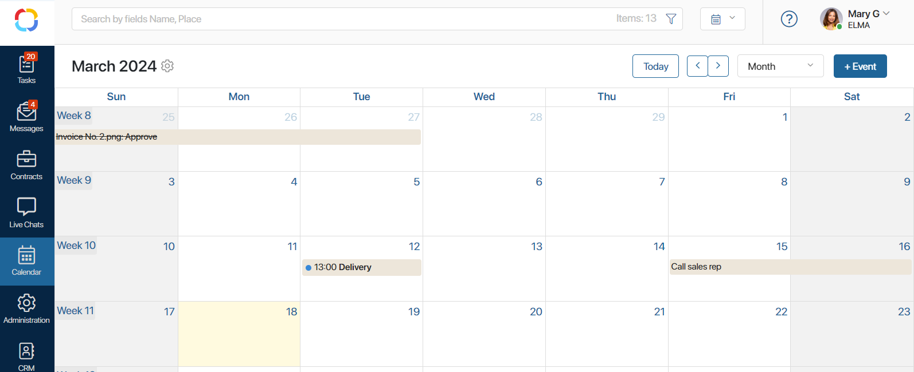
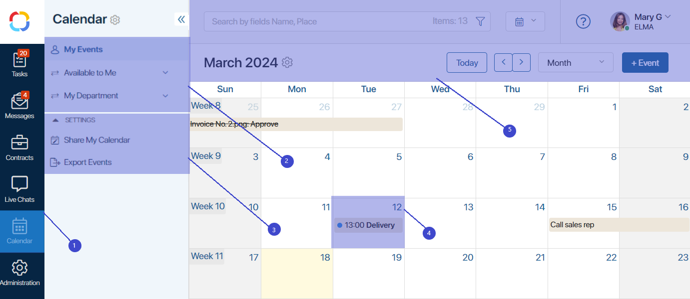
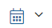
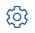
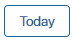
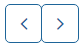
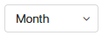
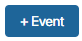
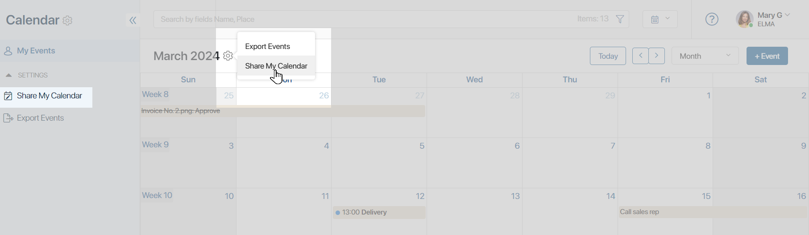
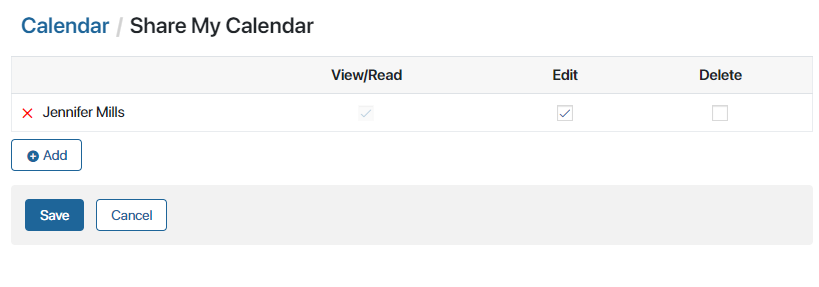

In the personal Calendar users can schedule events and monitor their tasks.
Apart from the personal calendar, BRIX has calendar-like apps. Events from these apps also appear in a user’s personal calendar. To learn more, see Event type apps.

Let’s say the HR department uses two calendars created as Event type apps: one for interviews and one for department meetings. In the first calendar, the HR employees add meetings with applicants manually. In the events of the second calendar, each HR employee is added as a participant. In this case, an HR employee’s personal calendar will display both the interviews and department meetings.
If a person has been assigned to a managerial position in the company’s organizational chart, they will be able to view the events of their subordinates. To learn more, see My department.
Calendar interface
Here is what the personal calendar of an employee may look like:

- The counter on the left panel shows the number of events scheduled for the current date. The counter doesn’t show closed events.
- The left menu features the following calendars:
- My Events is the personal calendar of the current user.
- My Department is displayed for heads of departments and contains calendars of their subordinates. Click Show more to open the My Department page.
- Available to Me is displayed if the current user has been given access to the calendar of another user. Click Show more to open the list of all the available calendars.
- The Settings section contains the following pages:
- Share My Calendar. You can grant access to other users to interact with your calendar.
- Export Events. Here you can configure integration with external calendars.
- Events are displayed in calendar cells. The events that have ended are crossed out.
- The toolbar is located above the calendar:
 Change view: events and tasks list or the standard calendar.
 Export events from the personal calendar and change the calendar access settings.
 Go to the current day.
 Switch between periods, for example, months.
 Chosen display period: month, week, day.
 Create a new event. If you try to schedule more than one event for the same time slot, the system will show you a warning.
By default, the first day of the week in the calendar is Sunday. Users included in the Administrators group can change it for Monday in the Locale Settings.
Share your calendar
You can allow other users to access your calendar and events. To do so:
- Go to the permissions settings page in one of the following ways:
- In the left menu of the workspace, select Share My Calendar.
- On the calendar toolbar, click the gear icon and select Share My Calendar.

- On the provided page, click +Add and specify users, a user group and or an org chart item to share your calendar with.
- Select the types of permissions and click Save.

Your calendar will be added to the Available to Me section of the Calendar workspace of the selected users.
Found a typo? Select it and press Ctrl+Enter to send us feedback